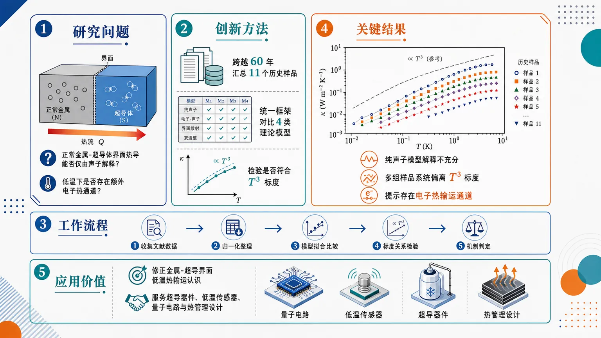
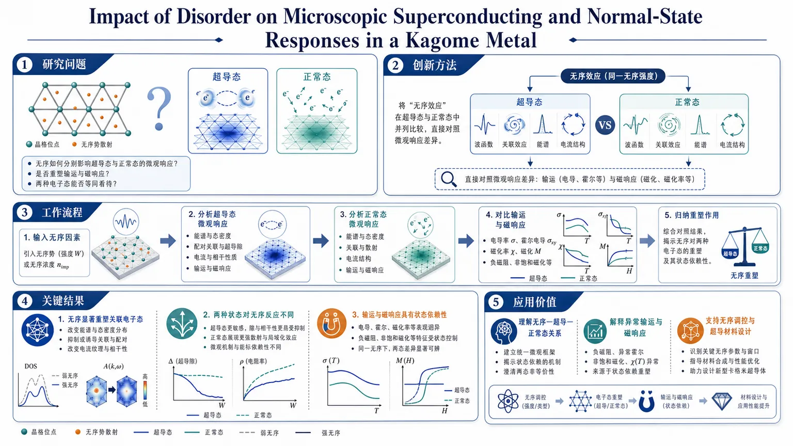
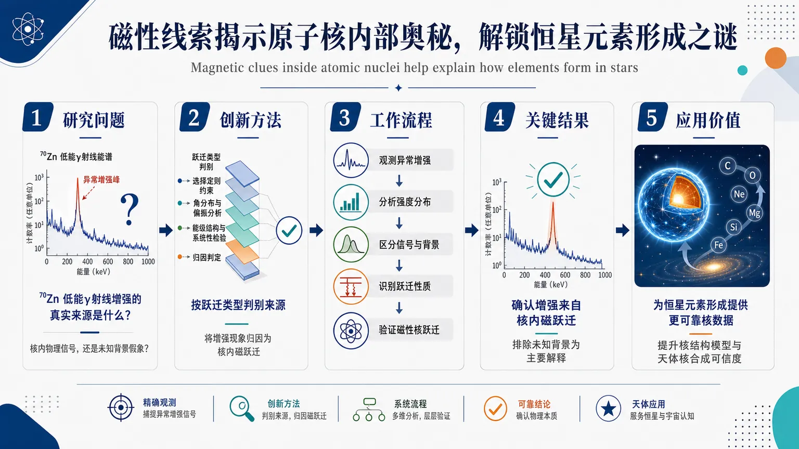
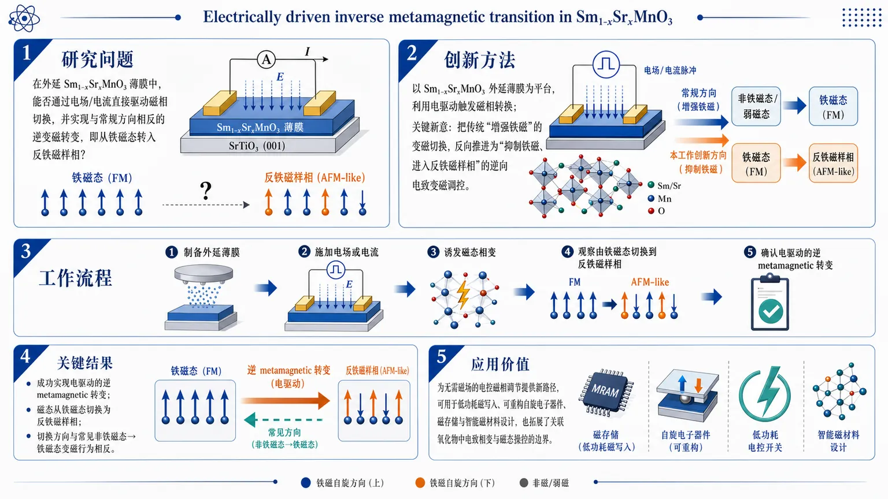
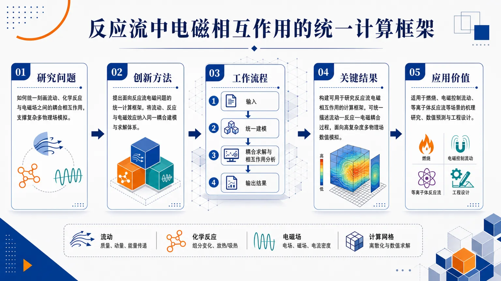
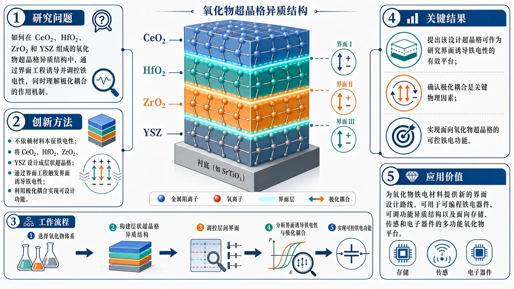
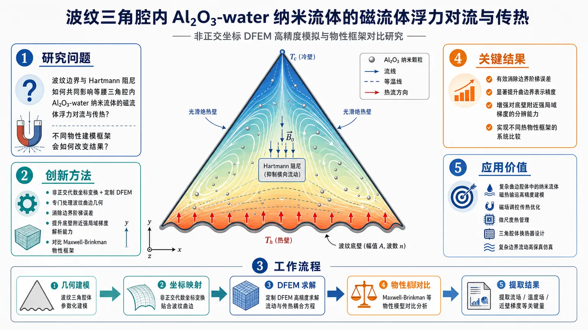

AI × Science 文献日报 2026/07/25
聚焦 AI × 物理 / 化学 / 材料交叉方向，自动过滤明显偏题的医学、教育与社会科学内容，并按主题重新排版，便于快速深读。
AI | 物理 | 化学 | 材料 | 交叉学科
原始候选 18 篇中，已剔除 0 篇明显偏离主线的内容，并从剩余 18 篇主线相关文献中精选 14 篇进入日报页，优先保留 AI × 物理 / 化学 / 材料交叉与关键计算方法工作。
核心关注（ML × ferro / 凝聚态）
5 篇今天的进展把铁电/磁性调控从BaTiO3式体相软模推进到CeO2、HfO2、ZrO2、YSZ超晶格界面极化，以及Sm1-xSrxMnO3电场反向变磁。计算端可用DFT+U给出HfO2/锰氧化物局域电子与磁交换基准，MACE、NEP和equivariant GNN用于层序、应变、氧空位、掺杂空间的可微势能面。交替磁性新闻强化了CrI3、CrSBr、MnTe、RuO2这类磁性层状/自旋分裂体系的筛选任务，磁空间群特征不能再被普通图网络忽略。70Zn磁跃迁与反应流电磁耦合虽非传统铁电材料问题，但把“磁响应谱—多场耦合方程”纳入了可做物理约束ML的相邻靶标。
-
01界面诱导萤石氧化物超晶格铁电性Interface Induced Ferroelectricity in Designed CeO2, HfO2, ZrO2 and YSZ Based Superlattice Heterostructures
📄 摘要：围绕 CeO2、HfO2、ZrO2 与 YSZ 基人工超晶格异质结构，题名指向通过界面设计诱导铁电性。期刊页面为 Advanced Functional Materials EarlyView，列表未给出实验厚度、极化强度或开关电压等摘要细节；可确认核心对象是萤石氧化物界面极化而非单一块体相。
💡 亮点：CeO2/HfO2/ZrO2/YSZ 超晶格被用于界面诱导铁电性，突出萤石氧化物中界面工程对极性相的控制。该方向直接关联 CMOS 兼容铁电存储与氧化物异质结序参量设计。
📐 方法要点：人工萤石氧化物超晶格界面设计诱导极化
🔗 相关工作关联：呼应HfO2铁电、YSZ/氧空位界面、BaTiO3超晶格极化工程
💡 对你方向的启示：用DFT+U、NEP、MACE扫描层序、应变、氧空位，学习界面极化描述符。
-
0270Zn 核内磁跃迁解释恒星成核Magnetic clues inside atomic nuclei help explain how elements form in stars
📄 摘要：FRIB 牵头团队解析 70Zn 原子核低能 γ 射线增强的来源，指出过量低能 γ 发射来自核内磁跃迁。相关 Nature 论文题为“70Zn 中低能增强的磁性特征”，结果用于约束核 γ 强度函数，并影响恒星环境中元素合成速率的核物理输入。
💡 亮点：70Zn 的低能 γ 增强被归因于磁跃迁，解决核谱学中的长期异常。该结果虽属核物理，但会改变天体核反应率模型中关键微观输入。
📐 方法要点：γ强度函数分解，锁定70Zn低能增强的磁跃迁
🔗 相关工作关联：呼应核壳模型、M1跃迁、恒星r/s过程核反应率约束
💡 对你方向的启示：磁跃迁谱可作小数据贝叶斯或物理约束ML基准，区分E1/M1通道。
-
03交替磁性获欧洲凝聚态物理奖Prize honors discovery of altermagnetism as a third fundamental class of magnetism
📄 摘要：2026 年欧洲物理学会凝聚态物理 Europhysics Prize 授予 Jairo Sinova、Libor Šmejkal 与 Tomas Jungwirth，以表彰交替磁性的发现。交替磁性被描述为区别于铁磁与反铁磁的第三类基本磁性，兼具零净磁化与自旋分裂能带等特征，正在重塑自旋电子学材料分类。
💡 亮点：交替磁性作为第三类基本磁性获得欧洲凝聚态物理最高级别奖项之一认可。其零净磁化与动量依赖自旋分裂组合，正推动无杂散场自旋电子学材料筛选。
📐 方法要点：以对称性分类确认交替磁性第三基本磁序
🔗 相关工作关联：呼应自旋群、非共线反铁磁、RuO2/MnTe式自旋分裂能带
💡 对你方向的启示：筛选CrSBr、MnTe等材料时，应把磁空间群特征显式喂给等变GNN。
-
04反应流电磁相互作用计算方法A computational approach for the study of electromagnetic interactions in reacting flows
📄 摘要：Computer Physics Communications 在线论文提出用于反应流中电磁相互作用的计算框架，作者为 Efstratios M. Kritikos、Stewart Cant 与 Andrea Giusti。列表未给出方程离散、验证算例或误差数值；从题名可确认目标是把电磁场耦合到化学反应流模拟，用于等离子体、燃烧或 MHD 相关多物理问题。
💡 亮点：该工作面向反应流中的电磁耦合数值模拟，关注化学、流体与场方程的统一计算。对高温等离子体和 MHD 材料加工模拟具有方法学相关性。
📐 方法要点：反应流方程与电磁场耦合的多物理计算框架
🔗 相关工作关联：呼应MHD、等离子体燃烧、Maxwell-Navier-Stokes耦合
💡 对你方向的启示：可用PINN或神经算子替代昂贵耦合求解器，但必须嵌入守恒约束。
-
05Sm1-xSrxMnO3 电驱逆变磁转变Electrically driven inverse metamagnetic transition in Sm 1-x Sr x MnO₃
📄 摘要：在外延 Sm1-xSrxMnO3 薄膜中，作者展示由电驱动的逆变磁转变：体系从铁磁态切换到反铁磁样相，而传统关联氧化物变磁通常是非铁磁到铁磁。论文发表于 Nature Communications，摘要未列 x、临界电场或温度范围；关键结论是电场可反向操控锰氧化物磁基态。
💡 亮点：Sm1-xSrxMnO3 外延薄膜实现电驱铁磁到反铁磁样相的逆变磁转变，方向与常规变磁相反。该现象为关联氧化物中电场调控磁序提供具体材料范例。
📐 方法要点：电场驱动Sm1-xSrxMnO3铁磁到反铁磁样逆变磁
🔗 相关工作关联：呼应锰氧化物相分离、庞磁阻、DFT+U双交换/超交换竞争
💡 对你方向的启示：把电场、应变、掺杂作为可控变量，训练相图分类器并做主动学习。
今日摘要
总览：今日 14 篇覆盖氧化物异质结、关联磁电转变、量子磁体、超导界面输运、莫尔氧化物膜与光电/生物材料。代表性工作包括 Sm1-xSrxMnO3 薄膜的电驱铁磁到反铁磁样逆变磁转变、Kitaev-Γ-Γ′ 模型中任意子极化子探针，以及扭转 SrTiO3 膜的莫尔超晶格光学响应。
热点：界面与异质结构仍是功能材料设计主线，萤石氧化物超晶格、常金属/超导边界、β-W 自旋轨道力矩堆栈均指向界面调控输运和序参量。关联电子体系中，电场驱动相变、无序调控 Kagome 金属超导、交替磁性等主题持续升温。低维与人工周期结构扩展到氧化物膜莫尔超晶格和量子点微显示器件，强调光学可读出与可集成性。计算方向集中在反应流电磁耦合和复杂边界 MHD 纳米流体，高保真数值方法替代简化几何与常物性近似。
今日文献
14 篇 · 8 含图深析-
01
📊 含图深析
📄 摘要：预印本重读六十年来 11 个常金属/超导异质界面热输运实验，指出仅用声子导热且按 T³ 标度解释界面热导不足。作者把历史数据同 4 类可能包含电子热输运的理论模型比较，主张额外热流很可能由电子跨越常金属—超导边界承担。
💡 亮点：11 组历史界面热输运数据被用于检验常金属/超导边界的电子导热贡献。若电子通道成立，低温超导器件散热模型不能只保留 T³ 声子项。
📖 展开分析 + 配图

研究问题正常金属与超导体之间的界面热导，究竟能否仅由声子热输运解释？在低温下是否还存在额外的电子热输运通道，导致界面热流超出传统声子模型的预测？创新方法跨越60年系统汇总11个金属-超导界面样品的历史热输运数据，并与4类理论模型逐一对比；核心“Aha！”在于不再只看单个实验，而是用统一框架检验界面热导是否真的符合纯声子主导的T³标度，从而识别出可能被忽略的电子热通道。工作流程收集历史文献中的11组界面热导数据 → 按温度与结构条件整理归一化 → 与4类理论模型分别拟合和比较 → 检验是否满足声子主导的T³标度关系 → 判断纯声子机制是否足够 → 若偏离明显，则引入电子热输运通道解释实验结果。关键结果实验数据表明，单纯采用声子机制并假设界面热导服从T³标度，解释不充分；多组样品均显示出系统性偏离，提示界面中存在额外热通道。综合比较后，最可能的来源是电子热输运，说明正常金属-超导界面的热传导不能只按声子模型理解。应用价值修正对金属-超导界面低温热输运的基础认识，为超导电子器件、低温传感器、量子电路和热管理设计提供更准确的界面热导模型，避免仅用声子假设导致的热预算误差。核心概览
本文重检60年来11个法向金属/超导体异质界面热输运样品数据，评估界面热导来源，指出除传统声子 (T³) 贡献外，电子跨界面热输运也可能显著贡献热导。
方法要点
- 汇总并重新分析过去约60年中11个法向金属/超导界面热输运实验样品的数据。
- 将历史实验数据与四类理论模型进行比较。
- 检验仅用声子主导的 (T³) 温度依赖界面热流模型是否足以解释数据。
- 引入或强调电子热输运跨越法向金属/超导界面的贡献来解释额外热导。
- 具体四类理论模型的名称、形式和参数处理方式，摘要未详述。
关键结果
- 摘要明确指出：仅用声子 (T³) 贡献解释法向金属/超导界面热流是不充分的。
- 历史数据中存在超出纯声子模型预期的界面热导贡献。
- 电子跨界面热输运能够解释这些额外热导。
- 作者认为，在法向金属/超导体异质材料边界处，电子热输运应被纳入界面热导理解框架。
- 具体拟合优度、温度范围、材料组合和定量提升幅度，摘要未详述。
创新性判断
- 可能的新颖点在于：该工作不是单一新实验，而是对长期分散的历史数据进行系统重检，并用多类理论模型统一比较。
- 相对传统将低温界面热导主要归因于声子 (T³) 行为的解释，本文强调电子跨法向金属/超导边界传热的重要性，这可能构成物理解释上的修正或补充。
- 若同方向既有工作已讨论电子贡献，则本文的新意可能主要在于跨样品、跨年代数据的综合验证；这一点因摘要信息有限，仍不确定。
- 具体理论模型是否为作者新提出、改进还是仅用于比较，摘要未详述，不能判断其方法学原创程度。
-
02
📊 含图深析
📄 摘要：Advanced Functional Materials EarlyView 论文聚焦 Kagome 金属中无序对微观超导态和正常态响应的影响。列表未给出具体化学组成、无序引入方式、转变温度或探针谱线；从题名可确认研究重点是把无序与 Kagome 晶格中的超导和正常态微观响应关联起来。
💡 亮点：Kagome 金属的无序效应被用于区分超导态与正常态的微观响应变化。该问题直接关系 Kagome 平带、关联序和非常规超导之间的竞争。
📖 展开分析 + 配图

研究问题在 Kagome 金属中，无序会如何分别影响超导态与正常态的微观响应？这种影响是否会重塑输运与磁响应，并且两种电子态能否被等同看待？创新方法把“无序效应”放到超导态和正常态两个电子态中并列比较，不只看超导转变本身，而是直接对照两种状态的微观响应差异，抓住无序重构关联电子态的关键切入点。工作流程以 Kagome 金属为对象，引入/考察无序因素；分别分析超导态与正常态的微观响应；重点观察输运响应和磁响应；最后对比两种状态下的差异，归纳无序对关联电子态的重塑作用。关键结果无序会显著重塑 Kagome 金属中的关联电子态；超导态与正常态对无序的反应并不相同，输运与磁响应会出现状态依赖性的变化；说明研究无序影响时必须分开考察不同电子态，不能简单合并处理。摘要未给出具体数值提升。应用价值为理解 Kagome 关联电子体系中“无序—超导—正常态”三者关系提供框架，可用于解释实验中异常输运和磁响应的来源，也为后续调控无序、优化超导与电子功能材料设计提供依据。核心概览
研究 kagome 金属中无序对微观超导与正常态响应的影响，属于凝聚态物理中关于非常规超导与无序效应的方向，结合了 μSR 相关实验与理论分析。
方法要点
- 以 kagome 金属为对象，考察无序引入后对超导与正常态性质的变化。
- 研究团队包含 μSR 实验与理论研究者，说明工作很可能以 μSR 作为微观探测手段之一。
- 从“microscopic superconducting and normal-state responses”表述看，重点是从微观层面分析响应，而非仅看宏观输运。
- 具体化合物、无序调控方式及参数细节摘要未详述。
关键结果
- 摘要明确指出：论文关注无序对 kagome 金属中微观超导响应和正常态响应的影响。
- 该工作将实验观测与理论分析结合，用于讨论无序在该类材料中的作用。
- 关于具体结论、趋势方向、是否增强/抑制超导等，摘要未详述。
创新性判断
- 可能的新颖点在于：把“无序效应”与“kagome 金属的微观超导/正常态响应”直接关联起来研究，而不是只讨论平均性质或单一输运结果。
- 若确实采用 μSR 微观探测并结合理论，则其创新性可能体现在从局域尺度揭示无序如何重塑超导与正常态行为。
- 但由于摘要信息有限，以上判断具有不确定性，具体创新程度仍需全文确认。
-
03
📊 含图深析
📄 摘要：FRIB 牵头团队解析 70Zn 原子核低能 γ 射线增强的来源，指出过量低能 γ 发射来自核内磁跃迁。相关 Nature 论文题为“70Zn 中低能增强的磁性特征”，结果用于约束核 γ 强度函数，并影响恒星环境中元素合成速率的核物理输入。
💡 亮点：70Zn 的低能 γ 增强被归因于磁跃迁，解决核谱学中的长期异常。该结果虽属核物理，但会改变天体核反应率模型中关键微观输入。
📖 展开分析 + 配图

研究问题⁷⁰Zn 中低能 γ 射线增强的真实来源是什么？它究竟是核内物理信号，还是未知背景造成的假象？创新方法把长期悬而未决的 γ 强度异常，直接按“跃迁类型”做来源判别；核心突破是将增强现象明确归因为核内磁跃迁，而不是笼统异常或背景噪声。工作流程观测 ⁷⁰Zn 低能 γ 射线异常增强 → 分析 γ 强度分布 → 区分核内信号与背景贡献 → 识别跃迁性质 → 证实磁性核跃迁是主要来源 → 将结论用于元素合成与核结构解释。关键结果确认 ⁷⁰Zn 的低能 γ 射线增强来自核内磁跃迁，排除了“未知背景”作为主要解释，解释了一个长期未决的核谱异常，并为天体元素合成提供了更可信的核物理依据。应用价值为恒星中元素形成的核反应研究提供更可靠的核数据，提升核结构模型与天体核合成计算的可信度，也为相关异常谱线的物理解释提供范式。核心概览
该研究解析了 (⁷⁰)Zn 原子核低能 γ 射线增强的物理来源，属于核结构与核天体物理交叉方向。
方法要点
- 研究对象为 (⁷⁰)Zn 原子核中的低能 γ 射线增强现象。
- 通过分析低能 γ 发射特征，判断其来源与核内磁跃迁有关。
- 结果被用于约束核 γ 强度函数。
- 研究将核结构信息连接到恒星环境中元素合成速率的核物理输入。
- 摘要未详述具体实验装置、数据分析流程、能区范围或理论模型。
关键结果
- (⁷⁰)Zn 中过量的低能 γ 发射被归因于原子核内部的磁跃迁。
- 该发现为低能 γ 射线增强现象提供了磁性来源解释。
- 研究结果可用于改进或约束核 γ 强度函数。
- 该约束会影响恒星环境中元素合成速率的核物理输入。
- 摘要未给出具体增强幅度、跃迁强度、误差范围或对元素合成速率的定量影响。
创新性判断
- 可能的新颖点在于：直接将 (⁷⁰)Zn 低能 γ 射线增强与磁跃迁特征联系起来，为此前低能增强来源问题提供了较明确的核结构解释。
- 另一潜在创新在于：把该磁性特征用于约束 γ 强度函数，并进一步关联到恒星核合成速率输入，体现了从微观核结构到天体物理建模的连接。
- 但由于摘要未详述实验方法、对照体系和与既有工作的差异，具体创新幅度和相对领先性仍无法确定。
-
04
📊 含图深析
📄 摘要：在外延 Sm1-xSrxMnO3 薄膜中，作者展示由电驱动的逆变磁转变：体系从铁磁态切换到反铁磁样相，而传统关联氧化物变磁通常是非铁磁到铁磁。论文发表于 Nature Communications，摘要未列 x、临界电场或温度范围；关键结论是电场可反向操控锰氧化物磁基态。
💡 亮点：Sm1-xSrxMnO3 外延薄膜实现电驱铁磁到反铁磁样相的逆变磁转变，方向与常规变磁相反。该现象为关联氧化物中电场调控磁序提供具体材料范例。
📖 展开分析 + 配图

研究问题在外延 Sm₁₋ₓSrₓMnO₃ 薄膜中，能否通过电场/电流直接驱动磁相切换，并实现与常规方向相反的逆变磁转变，即从铁磁态转入反铁磁样相？创新方法以 Sm₁₋ₓSrₓMnO₃ 外延薄膜为平台，利用电驱动触发磁相转换，关键新意在于把传统“增强铁磁”的变磁切换，反向推进为“抑制铁磁、进入反铁磁样相”的逆向电致变磁调控。工作流程制备 Sm₁₋ₓSrₓMnO₃ 外延薄膜作为关联氧化物磁性平台；施加电场或电流作为外部驱动；诱发薄膜磁态发生相变；观察磁态由铁磁态切换到反铁磁样相；确认得到电驱动的逆 metamagnetic 转变。关键结果成功实现电驱动的逆 metamagnetic 转变；磁态从铁磁态切换为反铁磁样相；该切换方向与关联氧化物中常见的非铁磁态→铁磁态变磁行为相反，体现出“反向”磁相调控的新现象。应用价值为无需磁场的电控磁相调节提供新路径，可用于低功耗磁写入、可重构自旋电子器件、磁存储与智能磁材料设计，也拓展了关联氧化物中电致相变与磁态操控的边界。核心概览
该论文研究外延 Sm₁₋ₓSrₓMnO₃ 薄膜中的电场调控磁相变，展示了电驱动的“反变磁”转变：由铁磁态切换到类反铁磁相，属于关联氧化物/锰氧化物电控磁性方向。
方法要点
- 研究对象为外延 Sm₁₋ₓSrₓMnO₃ 薄膜。
- 采用电驱动方式调控薄膜磁态。
- 关注铁磁态与类反铁磁相之间的可切换行为。
- 将该现象与常见“非铁磁到铁磁”的变磁开关进行对比。
- 具体制膜方法、器件结构、测量手段、电场强度等摘要未详述。
关键结果
- 在 Sm₁₋ₓSrₓMnO₃ 外延薄膜中观察到电驱动的反变磁转变。
- 电场可使体系从铁磁态切换到类反铁磁相。
- 该转变方向与常见关联氧化物中的变磁开关相反。
- 结果表明电场能够重构锰氧化物的磁基态。
- 转变的可逆性、温度范围、相变阈值和磁性变化幅度等摘要未详述。
创新性判断
- 可能的新颖点在于实现了电驱动的“铁磁到类反铁磁”切换，而非更常见的“非铁磁到铁磁”电控变磁行为。
- 该工作可能拓展了关联氧化物中电场调控磁基态的方向，强调电场不仅能诱导铁磁性，也能抑制或重构铁磁基态。
- 若该效应在外延锰氧化物薄膜中稳定且可控，其潜在意义在于为低功耗电控磁相器件提供新机制；但器件性能和应用可行性摘要未详述。
-
05
📊 含图深析
📄 摘要：2026 年欧洲物理学会凝聚态物理 Europhysics Prize 授予 Jairo Sinova、Libor Šmejkal 与 Tomas Jungwirth，以表彰交替磁性的发现。交替磁性被描述为区别于铁磁与反铁磁的第三类基本磁性，兼具零净磁化与自旋分裂能带等特征，正在重塑自旋电子学材料分类。
💡 亮点：交替磁性作为第三类基本磁性获得欧洲凝聚态物理最高级别奖项之一认可。其零净磁化与动量依赖自旋分裂组合，正推动无杂散场自旋电子学材料筛选。
📖 展开分析 + 配图
研究问题传统磁性理论是否只包含铁磁和反铁磁两大类，还是存在一种尚未被识别的第三类基本磁性？创新方法提出并确立 altermagnetism（元磁性）作为独立的第三类基本磁性，不再把新现象塞进铁磁/反铁磁的旧框架，而是直接重建磁性分类体系，核心亮点是“第三分支”这一概念突破。工作流程从已有磁性分类出发，重新审视自旋排列与晶体对称性；识别出一种既不同于铁磁又不同于反铁磁的磁性特征；将其概念化并命名为 altermagnetism；最终将其归入新的基本磁性类别并获得学界认可。关键结果2026 年 Europhysics Prize 授予 Jairo Sinova、Libor Šmejkal 和 Tomas Jungwirth，以表彰他们发现 altermagnetism；磁性分类从“铁磁/反铁磁二分”扩展为“三类基本磁性”框架。应用价值重塑凝聚态物理中对磁性的基础理解，为新型磁性材料、磁电子学器件和未来自旋相关技术提供新的理论坐标与材料筛选方向。核心概览
这是一则奖项/评述性摘要，主题是“交替磁性（altermagnetism）”被提出为区别于铁磁与反铁磁的第三类基本磁性，属凝聚态磁性分类研究方向。
方法要点
- 以“交替磁性”概念重构磁性分类框架。
- 从自旋对称性与能带劈裂角度界定其物理特征。
- 将其与传统铁磁、反铁磁进行对照区分。
- 摘要未详述具体模型、实验手段或计算方法。
关键结果
- 2026 年欧洲物理学会凝聚态分部欧洲物理奖授予 Jairo Sinova、Libor Šmejkal 与 Tomas Jungwirth。
- 奖项表彰其对交替磁性发现的贡献。
- 摘要明确将交替磁性描述为“第三类基本磁性”。
- 该发现被认为重塑了对自旋对称性和能带劈裂的分类。
创新性判断
- 可能的新颖点在于：不是在既有铁磁/反铁磁框架内做修补，而是提出一个新的基本磁性类别。
- 其概念创新可能体现在：用新的对称性视角解释磁性与能带劈裂。
- 这类判断基于摘要表述，具体理论/实验突破细节摘要未详述。
-
06
📊 含图深析
📄 摘要：Computer Physics Communications 在线论文提出用于反应流中电磁相互作用的计算框架，作者为 Efstratios M. Kritikos、Stewart Cant 与 Andrea Giusti。列表未给出方程离散、验证算例或误差数值；从题名可确认目标是把电磁场耦合到化学反应流模拟，用于等离子体、燃烧或 MHD 相关多物理问题。
💡 亮点：该工作面向反应流中的电磁耦合数值模拟，关注化学、流体与场方程的统一计算。对高温等离子体和 MHD 材料加工模拟具有方法学相关性。
📖 展开分析 + 配图

研究问题如何用统一的计算方法，刻画反应流中流动、化学反应与电磁场之间的耦合相互作用，并支持复杂多物理场模拟。创新方法提出面向反应流电磁问题的统一计算框架，把流动、反应和电磁效应放入同一套耦合建模与求解体系中，避免分别处理各物理过程带来的割裂感；其“Aha!”点在于用一个集成框架提升复杂耦合问题的可计算性。工作流程输入为反应流场及其电磁相关物理条件；首先建立流动、化学反应和电磁效应的统一模型；随后在同一计算框架内进行耦合求解与相互作用分析；最终输出反应流中的电磁耦合行为及多物理场模拟结果。关键结果论文的核心结果是构建出一个可用于研究反应流电磁相互作用的计算框架，可统一描述流动—反应—电磁耦合过程，并面向高复杂度多物理场数值模拟；摘要未给出具体数值提升或定量对比。应用价值可用于燃烧、电磁控制流动、等离子体反应流等复杂场景的机理研究与数值预测，为多物理耦合系统的建模、仿真和工程设计提供通用计算基础。核心概览（100字内）
这篇论文属于反应流多物理场数值模拟方向，主题是建立一个用于研究反应流中电磁相互作用的计算框架。就当前可见摘要信息而言，论文重点是方法性工作，具体模型细节、验证和性能表现摘要未详述。
方法要点
- 提出一个面向反应流电磁相互作用的计算框架。
- 研究对象是电磁场与反应流耦合问题。
- 从摘要可确认其定位为计算方法/数值模拟工作。
- 控制方程、离散格式、耦合策略与实现细节摘要未详述。
关键结果
- 摘要未详述具体实验或数值结果。
- 可确认的结论仅是：作者给出了一个用于研究反应流电磁相互作用的计算方法框架。
- 验证算例、误差分析、效率提升等摘要未详述。
创新性判断
- 可能的新颖点在于：将电磁相互作用纳入反应流计算框架中，提供统一的数值研究工具。
- 若该框架处理了耦合稳定性、通用性或复杂多物理场兼容性，则其创新性可能主要体现在耦合建模与计算实现上。
- 但由于摘要信息极少，以上判断仅是基于题名的合理推断，不确定性较高。
-
07
📊 含图深析
📄 摘要：围绕 CeO2、HfO2、ZrO2 与 YSZ 基人工超晶格异质结构，题名指向通过界面设计诱导铁电性。期刊页面为 Advanced Functional Materials EarlyView，列表未给出实验厚度、极化强度或开关电压等摘要细节；可确认核心对象是萤石氧化物界面极化而非单一块体相。
💡 亮点：CeO2/HfO2/ZrO2/YSZ 超晶格被用于界面诱导铁电性，突出萤石氧化物中界面工程对极性相的控制。该方向直接关联 CMOS 兼容铁电存储与氧化物异质结序参量设计。
📖 展开分析 + 配图

研究问题如何在 CeO2、HfO2、ZrO2 和 YSZ 组成的氧化物超晶格异质结构中，通过界面工程诱导并调控铁电性，同时理解极化耦合的作用机制。创新方法不依赖材料本征铁电性，而是将 CeO2、HfO2、ZrO2、YSZ 设计成层状超晶格，通过界面工程触发界面诱导铁电性，并利用极化耦合实现可设计的铁电功能。工作流程选择 CeO2/HfO2/ZrO2/YSZ 氧化物体系 → 构建层状超晶格异质结构 → 调控层间界面 → 分析界面诱导铁电性与极化耦合 → 实现可控铁电功能。关键结果论文提出这类设计超晶格可作为研究界面诱导铁电性的有效平台；确认极化耦合是体系中的关键物理因素；实现面向氧化物超晶格的可控铁电功能。摘要未给出具体定量性能提升。应用价值为氧化物铁电材料提供新的界面设计路线，可用于开发可编程铁电器件、可调功能异质结构以及面向存储、传感和电子器件的多功能氧化物平台。核心概览
该论文研究 CeO₂、HfO₂、ZrO₂ 与 YSZ 基人工超晶格异质结构，方向属于萤石氧化物界面工程与界面诱导铁电性。
方法要点
- 采用人工设计的超晶格异质结构作为研究对象，而非单一块体或单层薄膜体系。
- 研究材料体系包括 CeO₂、HfO₂、ZrO₂ 和 YSZ 等萤石结构氧化物。
- 核心策略是通过异质界面设计诱导或调控极化/铁电行为。
- 摘要未详述具体制备方法、层厚设计、表征手段或理论计算方法。
关键结果
- 论文题名和摘要信息明确指向：在上述萤石氧化物基超晶格异质结构中实现了界面诱导铁电性。
- 可确认其关注点是“界面极化”或“界面诱导的铁电行为”，而不是传统单一块体相铁电性。
- 摘要未详述极化强度、开关电压、居里温度、循环稳定性、厚度依赖或器件性能等具体结果。
- 摘要未给出不同材料组合之间性能差异或最优结构。
创新性判断
- 可能的新颖点在于：将 CeO₂、HfO₂、ZrO₂ 与 YSZ 等萤石氧化物通过人工超晶格界面工程引入铁电性，而不是依赖单一材料本征相变。
- 相比常见 HfO₂ 基铁电研究，该工作可能扩展到多种萤石氧化物及其异质界面体系，强调“界面诱导”机制；但具体机制摘要未详述。
- 若论文确实系统比较了多种萤石氧化物超晶格，则其创新性可能体现在可设计的界面极化平台；但摘要未提供实验或理论细节，判断仍有不确定性。
-
08
📊 含图深析
📄 摘要：预印本数值研究 Al2O3-水纳米流体在波纹封闭等腰三角腔中的 MHD 浮力对流。方法上采用非正交代数坐标变换与定制离散有限元求解器，消除阶梯边界误差并捕捉波纹底壁附近陡峭梯度；同时比较传统 Maxwell-Brinkman 常物性框架与更高保真热物性描述。
💡 亮点：Al2O3-水纳米流体三角腔 MHD 对流被置于波纹边界与 Hartmann 阻尼耦合条件下求解。非正交映射加离散有限元直接针对复杂边界热输运误差源。
📖 展开分析 + 配图

研究问题波纹边界和 Hartmann 阻尼如何共同影响等腰三角腔内 Al2O3-water 纳米流体的磁流体浮力对流与传热？同时，不同热物性建模框架（经典 Maxwell-Brinkman）会如何改变数值结果？创新方法将非正交代数坐标变换与定制 DFEM 求解器结合，专门处理波纹曲边几何；通过这种高保真离散方式消除边界阶梯误差，并提高底壁附近强局域梯度的解析能力，同时引入 Maxwell-Brinkman 物性框架对比，评估热物性建模差异。工作流程建立波纹等腰三角腔与 Al2O3-water 纳米流体的 MHD 对流模型；用非正交代数坐标变换映射复杂边界；采用定制 DFEM 进行数值求解；对比不同物性框架；提取流场、温度场与近壁梯度特征，分析边界波纹和 Hartmann 阻尼的耦合作用。关键结果该数值方案能有效消除边界阶梯误差，显著提升曲边界表示精度；对底壁附近的强局域梯度具有更强分辨能力；同时实现了对不同热物性框架的系统比较，但摘要未给出具体性能提升数值。应用价值为复杂曲边腔体中的纳米流体磁热输运提供高精度建模工具，可用于受磁场调控的传热优化、微尺度热管理、三角腔体换热器设计以及复杂边界流动的高保真仿真。核心概览
研究波纹等腰三角腔内 Al2O3-水纳米流体的 MHD 浮力对流，属于传热强化/计算流体力学方向。
方法要点
- 采用预印本数值研究，分析波纹封闭等腰三角腔中的纳米流体对流。
- 考虑磁流体力学（MHD）与 Hartmann 阻尼对流动/传热的耦合作用。
- 使用非正交代数坐标变换处理波纹边界。
- 构建定制离散有限元求解器，以避免阶梯边界近似误差。
- 比较常物性模型与改进热物性模型的结果差异。
关键结果
- 摘要未详述具体定量结果。
- 明确表明该工作完成了对波纹三角腔纳米流体 MHD 浮力对流的高保真热物性分析。
- 明确进行了常物性与改进热物性模型的对比研究。
创新性判断
- 可能的新颖点在于将波纹边界、三角腔几何、MHD/Hartmann 阻尼、纳米流体放在同一框架下统一分析。
- 方法上，非正交代数坐标变换 + 定制有限元用于减小波纹边界的离散误差，可能是主要技术亮点。
- 另一个潜在创新是显式比较常物性与改进热物性模型，但其具体优势摘要未详述。
-
09
📄 摘要：预印本报道微米尺度量子点发光二极管，外量子效率超过 42%。面向近眼微显示，作者针对像素边缘电场畸变导致的效率—分辨率权衡，引入串联器件结构；摘要指出传统电荷产生层的电荷生成能力不足和工作电压高限制了高分辨图案化 QLED 的实现。
💡 亮点：微米级 QLED 通过串联结构把外量子效率推至 42% 以上，直接回应高分辨像素边缘电场畸变。结果瞄准近眼微显示中的效率—分辨率瓶颈。
-
10
📄 摘要：npj Quantum Materials 论文以任意子极化子作为观察 Kitaev-Γ-Γ′ 模型竞争相的窗口。列表未给出具体哈密顿量参数、数值方法或谱函数特征；从题名可确认核心思想是利用杂质或极化子与任意子激发的耦合，辨识 Kitaev 候选量子磁体中的相竞争。
💡 亮点：任意子极化子被提出为探测 Kitaev-Γ-Γ′ 竞争相的谱学窗口。该框架把分数量子激发与可观测极化子响应相连，服务于 Kitaev 材料相图判定。
-
11
📄 摘要：Advanced Functional Materials EarlyView 论文研究低电阻率 Mo 合金化 β-W 异质结构中的热稳健自旋轨道力矩翻转。列表未给出 Mo 含量、电阻率、自旋霍尔角、临界电流密度或温度窗口；题名表明材料设计目标是在保持 β-W 强自旋轨道效应的同时降低电阻并提升热稳定性。
💡 亮点：Mo 合金化 β-W 异质结构瞄准低电阻率与热稳健自旋轨道力矩翻转的兼容。该路线针对 SOT-MRAM 中功耗和热可靠性的核心矛盾。
-
12
📄 摘要：预印本调查土耳其 Erzurum 棕熊粪便与两只死亡棕熊体内胃肠蠕虫，结合显微与分子鉴定。检出 Baylisascaris transfuga 占 23.4%，Uncinaria stenocephala 占 3%；作者把土地利用变化、栖息地破碎化和气候波动视为野生动物、家畜与人类界面渗透性增强的背景。
💡 亮点：Erzurum 棕熊样本中检出 Baylisascaris transfuga 23.4% 与 Uncinaria stenocephala 3%。该条目偏生态寄生虫学，与凝聚态和计算材料主题关联较弱。
-
13
📄 摘要：Advanced Functional Materials EarlyView 论文报道扭转 SrTiO3 膜形成莫尔超晶格的光学信号，结合作者列表中的实验表征与第一性原理相关背景。列表未给出扭角、光谱峰位或空间分辨图像参数；核心体系是可扭转氧化物膜，目标是用光学响应识别 SrTiO3 莫尔周期结构。
💡 亮点：扭转 SrTiO3 膜把莫尔物理扩展到钙钛矿氧化物，并以光学信号读取超晶格。该平台有望连接氧化物强关联、铁电/声子模式与扭角工程。
-
14
📄 摘要：Advanced Functional Materials EarlyView 论文构建兼具光捕获与能级匹配的异质结构纳米管阵列，用于全光谱驱动光电刺激，调控创面中的上皮—神经—免疫系统。列表未给出纳米管组成、光电流、波长响应或动物/细胞实验数值；题名显示设计重点是光吸收增强和能带对齐协同。
💡 亮点：异质纳米管阵列通过光捕获和能级匹配实现全光谱光电刺激，用于创面上皮—神经—免疫调控。该材料更接近生物电子与光响应界面器件。